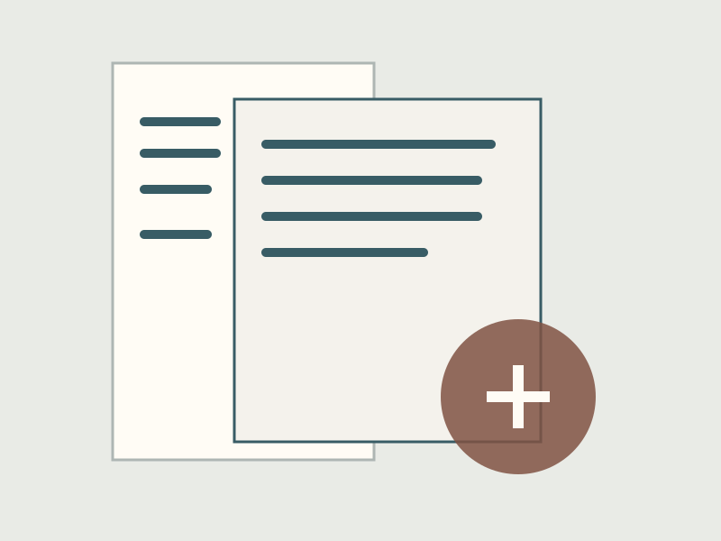

Décryptage
Quand les chiffres racontent plusieurs histoires
Replacer les données dans leur contexte change parfois la manière de comprendre un débat.
Enquête · Société
Une information accessible, des faits mis en perspective et des analyses qui laissent de la place aux nuances.

À lire aussi
Décryptage
Replacer les données dans leur contexte change parfois la manière de comprendre un débat.
Entretien
Un regard sur les méthodes, les sources et les limites de l'interprétation.
Analyse
Une rubrique pour dépasser l'instantané et conserver un fil de lecture.
Dossier de démonstration
Un texte de fond gagne à être lisible sans devenir simpliste. Les titres structurent le raisonnement, les paragraphes développent une idée, et les sources peuvent être consultées directement.
Le design éditorial privilégie une colonne de lecture confortable, des séparations discrètes et des éléments secondaires clairement identifiables. La couleur d'accent est une valeur de secours que chaque site peut remplacer.